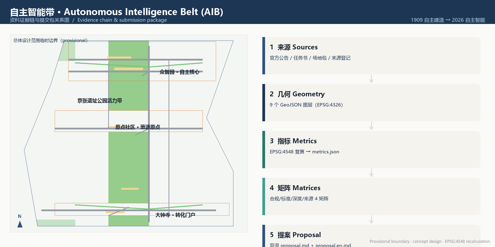
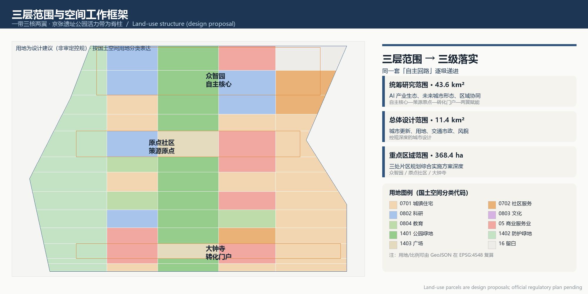
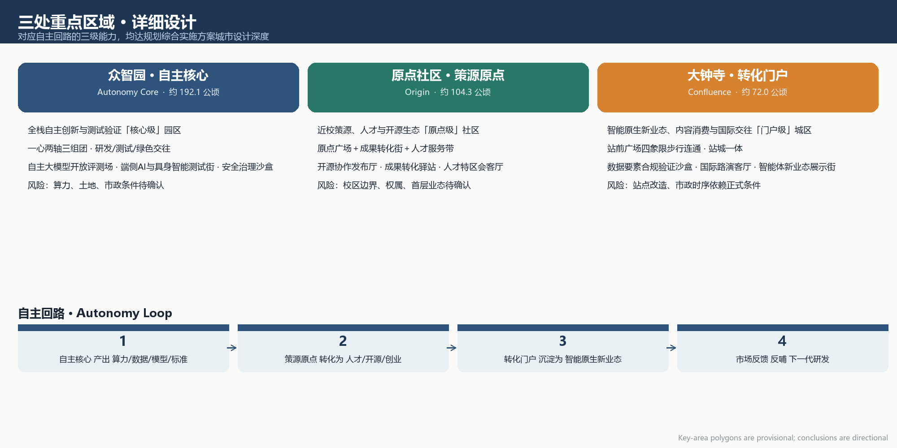
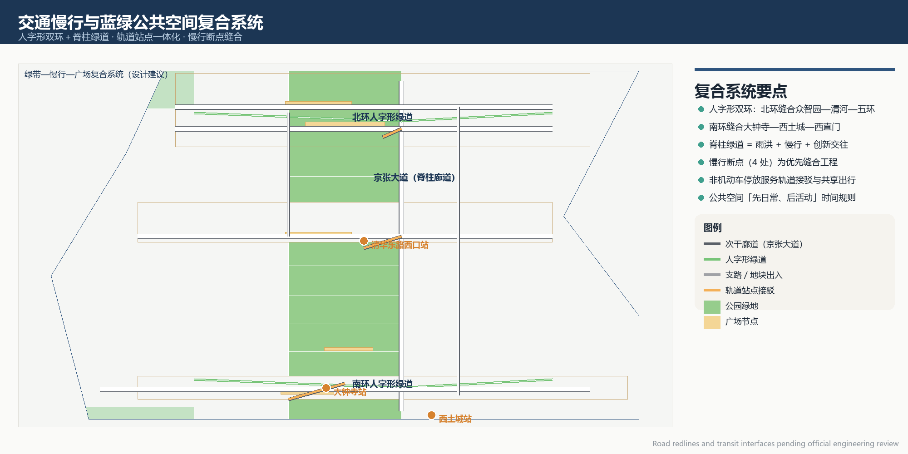
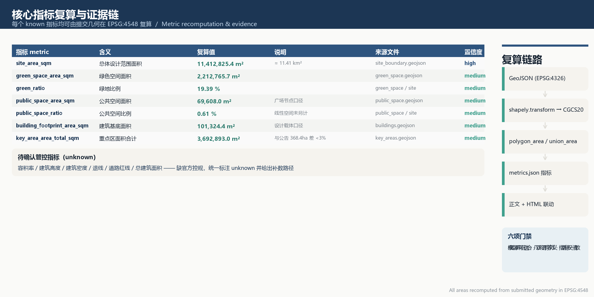

Autonomous Intelligence Belt / 自主智能带
A centennial sequel narrative from the 1909 Jing-Zhang Railway's self-reliant construction to an autonomous-intelligence era, organising the three areas and two wings into a loop of progressively advancing, feedback-driven autonomous-innovation capability, proposing an overall belt concept and naming system, detailed design for three key areas, 13 AI scenario cards (4 industry test-and-validation), 6 user personas, 4 AI pilgrimage landmarks and a global innovation events system.
Autonomous Intelligence Belt / 自主智能带
Design Basis and Source List
This proposal takes the International Solicitation Pre-qualification Announcement for the Centennial Jing-Zhang AI Innovation Belt Urban Design as its primary basis, with the agent-oriented open-call taskbook, the site-package registered sources and structured geometry as machine-readable basis. The three positions defined by the announcement (the centennial Jing-Zhang cultural belt, the metropolitan AI lifestyle experience belt, and the AI-integrated innovation belt), the five functions (an AI full-stack self-reliant innovation system, a world-class AI innovation ecosystem, a new AI+ scenario-empowerment paradigm, an intelligent and vibrant AI city, and global voice in AI governance) and the three-areas-two-wings layout delimit the boundaries of this proposal's judgement 来源 来源. The taskbook requires that all outputs be open co-creation proposals that do not replace formal planning or constitute government-ratified conclusions; all spatial recommendations here are framed as "concept proposals / reference schemes / available for professional teams to develop further" 来源.
Source availability is registered in data/source_registry.json: formal available sources inform design judgement, background sources serve as context only, and provisional-only sources are used for generation and display 来源. Official boundaries, regulatory plans, ownership, road redlines and municipal conditions are not yet provided in the public site package. This proposal therefore uses a maintainer-defined provisional rough boundary and provisional polygons for the three key areas, all flagged provisional_constraint with official_boundary=false, used only for concept generation, recalculation and display, never as official redlines, approval basis or precise-area conclusions 空间数据. Once official polygons are in place, land use, buildings, roads, green space, public space, phasing and metrics must be recalculated as a complete package.
The narrative starting point of this "Autonomous Intelligence Belt" is the 1909 Jing-Zhang Railway — the first trunk railway independently designed and built by China, where Jeme Tien-Yow solved the steep Guan-Gou gradient with a "zig-zag" (人字形) reversing alignment, achieving autonomy in the engineering sense. A century later, the corridor along this railway heritage is organised as a loop of AI full-stack autonomous innovation. Verifiable references accompany key judgements; the full machine index of sources, metrics, standards and design-depth coverage is kept in sources.json, metrics.json, compliance_matrix.json, standard_matrix.json and design_depth_matrix.json, rather than transcribed item-by-item in the body 来源 深度.

Three-Level Scope Framework
The proposal is organised around the three-level scope defined by the announcement: the coordinated research scope (approx. 43.6 km²) answers questions of AI industry ecology, future urban form and regional coordination; the overall design scope (approx. 11.4 km²) translates the industry strategy into urban renewal, land-use layout, transport and municipal systems and urban-character control, reaching the urban-design depth of a regulatory detailed plan; and the key-area scope (368.4 ha) carries out detailed design at regulatory comprehensive implementation-plan depth for the Zhongzhiyuan AI Autonomous-Innovation Acceleration Area, the Beijing AI Origin Community and the Dazhongsi AI Industry Cluster 空间数据 指标.
The three scopes are implemented level by level through one shared "autonomy loop" logic. The coordination level organises the three areas and two wings as a capability loop: Zhongzhiyuan produces compute, data, models and standards (the Autonomy Core); the Origin Community converts these capabilities into talent, open-source and entrepreneurship ecosystems (the Cradle Origin); Dazhongsi precipitates the ecosystem into native-AI new business forms and market feedback (the Confluence Gateway); the Zhongguancun Technology-Services Wing provides capital, IP and factor allocation; and the Xiaoyue River Scenario-Empowerment Wing opens AI+ scenarios to urban life. Market feedback returns to the core to feed the next generation of R&D. The overall level lands this loop in the land-use structure, innovation corridors and slow-mobility loops; the key-area level uses three "zig-zag" stitch nodes to test the spatial implementability of the loop 深度 来源.
Areas, ratios and layer counts are all recomputed from the submitted geometry in EPSG:4548. Provisional boundaries allow design discussion but constrain statutory conclusions: this proposal does not derive floor-area ratio, building heights, a final retain/renovate/demolish plan, road redlines or engineering feasibility; where regulatory plans and ownership are absent, these are uniformly marked as to-be-confirmed 标准 深度. The mapping of three-level scope, tasks and depth items is kept in compliance_matrix.json, ensuring every mandatory task of announcement items 1.3, 1.4, 1.5 and agent.1–agent.6 has section, layer, metric, drawing and HTML evidence.

| Level | Design question | This proposal's answer | Data anchor |
|---|---|---|---|
| Coordinated research scope | How to organise AI industry ecology and future urban form | Capability loop of "Autonomy Core—Cradle Origin—Confluence Gateway—two wings" | land_use, roads, green_space |
| Overall design scope | How to map urban renewal, land use, transport, municipal works and character | Heritage-park vitality spine as backbone, three cores as anchors, double-loop slow mobility as skeleton | 空间数据, 空间数据 |
| Key-area scope | How the three areas reach detailed-design depth | Each forms a sub-scheme of positioning, spatial structure, building renewal, slow mobility, public space, AI scenarios and implementation risks | 空间数据 and the other two |
Coordinated Research: Industry and Future City
Coordinated research answers the industrial meaning of "autonomous intelligence." Drawing on readable digests of global AI innovation ecosystems: Silicon Valley–Stanford nurtures talent through university origination and open culture, teaching that the origination end and the industry end must collaborate close-by and frequently; Shenzhen Nanshan–Xili excels at hardware–software full-stack synergy and fast iteration, teaching that core-technology innovation needs co-located test-and-validation and supply chains; Singapore's one-north is known for campus-level integrated planning of industry, housing and public services, teaching that innovation districts must make quality of life a productive force; Tel Aviv is known for defence R&D spill-over and global markets, teaching that frontier results need explicit international attraction and commercialisation channels; Hangzhou Future Sci-Tech City–Zhijiang Lab links platform, models and scenarios, teaching that large models should be opened near application scenarios; London King's Cross shows heritage-station district regeneration carrying innovation and creative industries, teaching that railway-heritage renewal itself can be an innovation carrier; and the Toronto waterfront smart-city experiment warns that data governance, privacy and public oversight must come first 来源. These lessons are each translated into spatial mechanisms (campus-adjacent incubators, co-located test grounds, campus-level living facilities, international pitch halls, scenario-open platforms, heritage-renewal districts, data-governance sandboxes), not copied as case appearances.
Naming system: the main name "Autonomous Intelligence Belt" (AIB; colloquial Chinese 自智带) takes the letter "A" for both Autonomy and AI. Sub-area names advance by loop function: Zhongzhiyuan · Autonomy Core (full-stack autonomous-innovation system), Origin Community · Cradle Origin (talent and open-source origination), Dazhongsi · Confluence Gateway (native-AI new business forms and international exchange), Zhongguancun Technology-Services Wing (factor allocation and IP enablement), and Xiaoyue River Scenario-Empowerment Wing (scenario opening and AI urban life). Logo direction: a "human—loop" glyph in which the zig-zag rail and a circuit loop are isomorphic, with dual lines (steel rail + data stream) crossing into the letter "A", in Jing-Zhang steel blue and intelligence green; wayfinding and visual-identity direction is detailed in the cultural narrative section 来源 标准.
Naming and logo land on space and operations: the Autonomy Core corresponds to the Zhongzhiyuan core R&D cluster and test grounds 空间数据; the Cradle Origin corresponds to the Origin Community's launch hall, outcomes-commercialisation street and talent services 空间数据; the Confluence Gateway corresponds to the Dazhongsi station-front plaza and international pitch living room 空间数据; the two wings are expressed as functional collaboration belts rather than newly drawn redlines 深度. Future-city-form research focuses on how AI changes work, encounter, mobility and public services, landing "native-AI new business forms, AI public spaces, on-device compute, scenario-open operation" as locatable functional areas, nodes and corridors, and listing the AI innovation index, talent density, industry-space supply and AI+ vertical applications as performance metrics awaiting calibration against formal data 深度.
Overall Design Scope: Urban Renewal and Regulatory-Planning-Depth Urban Design
The overall design takes the Jing-Zhang Heritage Park vitality belt as the city's spine, translating the railway historical axis into a blue-green public-space main axis; the three key areas are distributed north–south along the spine, forming a "one belt, three cores, two wings, double loops" spatial structure. The land-use structure follows the spine logic: parks and protective green along the heritage park 空间数据, research, education, commercial and residential uses flanking the spine, and plazas and service facilities around the three cores 空间数据. This structure lets green space carry stormwater, slow mobility and innovation encounter simultaneously, rather than a park and an industry district operating separately 标准.
Urban renewal follows an overall framework of "first inventory, then opening, then construction." Phase one registers and archives retainable buildings, mature trees, existing merchants and public-service networks; phase two tests demand through temporary openings, ground-floor through-passage, shared space and lightweight activities; phase three proceeds to permanent renovation or new construction after structural-safety, ownership, regulatory and engineering conditions are re-verified 深度. Because the existing-building baseline, ownership and formal regulatory plans are missing, retain/renovate/demolish conclusions are expressed as design carriers and to-be-verified objects, never claiming that any building has been approved for demolition or construction 空间数据.
Industry function mix and spatial organisation: along the northern spine segment (Zhongzhiyuan), research land predominates with test and green-encounter clusters 空间数据; the middle segment (around the Origin Community) mixes research, education, commercial and talent housing to support campus-adjacent origination 空间数据; the southern segment (Dazhongsi) centres on commercial services and plazas to host native-AI new business forms 空间数据. Building footprints can be recomputed from the submitted layers 指标, but total floor area, floor-area ratio, height, density and setbacks remain unknown without official regulatory conditions, recorded in the reason fields of metrics.json 标准 深度. Transport and municipal support centres on transit-station integration, zig-zag double-loop slow mobility, non-motorised-vehicle parking and green transport; new infrastructure (on-device compute, distributed energy) is treated as a prototype to be deepened and is listed as a formal-deepening prerequisite where engineering conditions are missing 深度.
Detailed Design of the Key Areas
The three key areas correspond to the three capability levels of the autonomy loop, each reaching the urban-design depth of a regulatory comprehensive implementation plan. Each is organised as "positioning + spatial structure + building renewal + transport and slow mobility + public space + AI scenarios + implementation risks"; all polygons are provisional and conclusions are directional only 空间数据.
Zhongzhiyuan · Autonomy Core (approx. 192.1 ha). Positioned as the "core-level" park for full-stack autonomous innovation and test-and-validation. Spatial structure is "one centre, two axes, three clusters": an innovation-encounter belt unfolds along the Qing River, a north–south innovation avenue crosses the core, the west hosts the autonomous-model and compute R&D cluster 空间数据, the centre hosts the test-and-validation cluster, and the east hosts green-encounter and talent-support clusters 空间数据. Building renewal centres on research, laboratories, incubators and mixed uses 空间数据, preserving the Qing River ecological frontage with low-disturbance development. Transport is organised outward via the Zhongzhiyuan Innovation Avenue and the Qing River waterfront road 空间数据; public space centres on the Zhongzhiyuan Innovation Plaza and the Qing River waterfront shared living room 空间数据. AI scenarios include the open benchmark for autonomous large models, the on-device AI and embodied-intelligence test street, and the safety-governance sandbox. Implementation risks: compute, land and municipal conditions to be confirmed; test grounds must be compatible with ecological and safety requirements 深度.
Origin Community · Cradle Origin (approx. 104.3 ha). Positioned as the "origin-level" community for campus-adjacent origination, talent and open-source ecosystems. The spatial structure takes the Tsinghua Garden railway-station cultural node as the origin, stitching the campus westwards and opening to Wudaokou commerce eastwards, forming an "origin plaza + outcomes-commercialisation street + talent-services belt" 空间数据. Building renewal centres on incubators, cultural display, offices and talent apartments 空间数据, with educational and research buildings retained and renovated 空间数据. Transport relies mainly on the Tsinghua East Road west-port stitch road and transit-station connections 空间数据, with slow mobility prioritising continuity between campus, park and block. AI scenarios include the open-source collaboration launch hall, the outcomes-commercialisation relay station and the talent-special-zone meeting room. Implementation risks: campus boundary, ownership and ground-floor uses to be confirmed; campus-adjacent slow mobility must be compatible with campus-management rules 深度 来源.
Dazhongsi · Confluence Gateway (approx. 72.0 ha). Positioned as the "gateway-level" district for native-AI new business forms, content consumption and international exchange. The spatial structure organises four-quadrant pedestrian connectivity around the Dazhongsi station-front plaza, forming a smart-terminal launch-and-display street, a data-element meeting room and an international pitch living room 空间数据. Building renewal centres on mixed use, retail, offices and transit interchange 空间数据; public space strengthens station–city integration and slow-mobility stitching 空间数据. AI scenarios include the data-element compliance-validation sandbox, the Dazhongsi international pitch living room and the agent native-business display street. Implementation risks: station redevelopment, municipal utilities and commercial-renewal sequencing depend on formal conditions; pitch and display uses must clear rights 深度 指标.

AI Innovation Ecosystem, Talent Personas and AI+ Scenarios
The proposal serves at least six user personas. Large-model and chip researchers need compute, data, testing and standards environments, answered spatially by the Zhongzhiyuan core R&D and test clusters; open-source developers and independent creators need community, licensing and reputation mechanisms, answered by the Origin launch hall and public code wall; startups and serial entrepreneurs need low-cost launch and testing grounds, answered by the Zhongzhiyuan shared test grounds and the Origin incubators; agent enterprises, investors and international visitors need display, pitch and business exchange, answered by the Dazhongsi international pitch living room; surrounding residents and families need living, leisure and low-disturbance renewal, answered by the heritage-park vitality belt and community services; and university faculty, students and returning talent need outcomes commercialisation, cross-university collaboration and a liveable environment, answered by the Origin outcomes-commercialisation street and talent apartments 来源.
The agent taskbook requires no fewer than 10 AI scenario cards; this proposal presents 13, of which 4 are AI industry test-and-validation scenarios. Industry-test scenarios: SC-01 Open Benchmark for Autonomous Large Models (Zhongzhiyuan) publicly benchmarks model performance, safety and reproducibility using rights-cleared datasets, with human-replacement and stop mechanisms 空间数据; SC-02 On-Device AI and Embodied-Intelligence Test Street (Zhongzhiyuan by the Qing River) tests low-speed robots, on-device devices and accessible interaction, with technology display not encroaching on ecological safety and continuous passage 空间数据; SC-03 Data-Element Compliance-Validation Sandbox (Dazhongsi) validates data authorisation, digital assets and auditable circulation using synthetic or rights-cleared data only 空间数据; and SC-09 AI Transport Co-operation Experiment Ground (southern belt) simulates slow-mobility-gap identification, transit connection and congestion warning without substituting for transport approval 空间数据.
The remaining cards: SC-04 Open-Source Collaboration Launch Hall (Origin), SC-05 Outcomes-Commercialisation Relay Station (Origin), SC-06 Talent-Special-Zone Meeting Room (Origin), SC-07 Agent Native-Business Display Street (Dazhongsi), SC-08 Dazhongsi International Pitch Living Room (Dazhongsi), SC-10 Jing-Zhang AI Slow-Mobility Guide (heritage park; explainable wayfinding and gap identification 空间数据), SC-11 AI Public-Safety and Emergency-Exercise Ground (public space; crowding warning and emergency drills, human review 空间数据), SC-12 AI Living-Services Model Street (community; health/education/legal/life services 空间数据), and SC-13 Qing River Low-Carbon Smart Waterfront (ecological monitoring, stormwater and waterfront activities 空间数据). Every card specifies spatial location, service objects, operational data, privacy boundary, human review, operator, visualisation layer and risk; the full mapping is in compliance_matrix.json. AI inputs follow purpose limitation and minimisation; outputs show data date, confidence and responsible party; no personal behaviour trajectories are collected and no unauthorised profiling is produced 深度 指标.
Land Use, Building Scale and Retain/Renovate/Demolish
Land use is organised as "spine—clusters—nodes" and expressed as seamless, overlap-free parcels per the national land-space survey, planning and use-control classification 空间数据. The industry function mix centres on research, education, commercial and green open space, with community services and talent housing around the cores. All areas and ratios can be recomputed from geometry/land_use.geojson, geometry/green_space.geojson and metrics.json 指标. Where existing buildings, ownership, regulatory plans and engineering conditions are absent, related area and intensity conclusions remain to-be-confirmed and are never disguised as approved indicators 标准 深度.
The building scheme distinguishes retain, renovate, renew, new-build and to-be-confirmed. Where the existing-building baseline, heritage protection and ownership are incomplete, the proposal uses design carriers: retainable buildings first receive reinforcement, energy-efficiency and accessibility renovation 空间数据; incubators, offices, research and commercial nodes are renewable objects; transit interchange and public-service buildings are new-built as needed; the specific retain/renovate/demolish is listed as "to be confirmed against formal conditions" 深度. Building footprints are recomputed from the layers 指标; building height, massing, rooflines and character control are proposed at an advisory level, with final control lines calibrated once heritage, regulatory and landscape conditions are available 深度.
Development intensity and spatial supply: without official regulatory conditions, floor-area ratio, building density, setbacks, total floor area and height controls are uniformly marked unknown, with the data-completion path explained (after obtaining the formal regulatory plan, an existing-building survey and ownership, recompute parcel by parcel and re-run self-checks). The A3 booklet and A0 boards present the renewal-project list and the metrics-review table; the HTML offers linked metric–layer viewing 深度.
Transport, Transit, Municipal Works and Public Services
The transport system is framed as "zig-zag double loops + spine greenway." Jing-Zhang Avenue runs north–south as the primary slow-mobility–vehicle composite corridor east of the heritage park 空间数据; the north-loop zig-zag greenway stitches the Zhongzhiyuan–Qing River–Fifth Ring nodes 空间数据 and the south-loop zig-zag greenway stitches the Dazhongsi–Xitucheng–Xizhimen nodes 空间数据, echoing the spatial memory of Jeme Tien-Yow's zig-zag alignment. Transit-station integration covers the Dazhongsi station, the Tsinghua East Road west-port station and the Xitucheng station areas 空间数据; slow-mobility gaps (the north Fifth Ring crossing node, Wudaokou, Tsinghua East Road west port, the Dazhongsi four quadrants) are priority stitch projects 深度.
Parking and non-motorised-vehicle organisation: non-motorised-vehicle parking serves transit connection and shared mobility first, with commuter parking organised at station peripheries and never within accessibility clear widths or green space. Municipal and public services cover innovation-service platforms, talent-living services, new infrastructure, distributed energy, on-device compute and integration with conventional municipal facilities 深度. Where road redlines, transit interfaces, utilities, fire, flood and municipal capacities are absent, related actions are listed as awaiting professional review, never disguised as approved engineering conditions 空间数据.

Blue-Green Space, Public Space and Urban Character
The blue-green system takes the heritage-park vitality belt as its spine, coordinating the Qing River and neighbourhood mobility along the corridor to form a north–south through, east–west connected system of footpaths and cycleways 空间数据. The Qing River waterfront green belt carries ecological protection, stormwater and innovation encounter 空间数据, and the rail-side protective green along the corridor secures safety buffers 空间数据. Green and public-space ratios are recomputed from the submitted geometry with their design meaning explained: green belts support the slow mobility and outdoor encounter of talent life, and plaza nodes support innovation launch and public experience 指标 指标 深度.
Public space follows a "daily first, events second" temporal rule: commuting, rest, children's play, elderly stays and accessible passage enjoy bottom-line space; launches, tests and commercial display reserve remaining capacity; temporary occupancy must show the organiser, authorisation period, noise ceiling and complaint channel. AI public spaces and native-AI business forms include the Qing River innovation-encounter belt, the Zhongzhiyuan Innovation Plaza 空间数据, the Tsinghua Garden Origin Plaza 空间数据 and the Dazhongsi station-front plaza 空间数据.
This proposal presents 4 AI pilgrimage landmarks (all concept landmarks, none approved or built): LB-01 Autonomy Origin Stele (in the Tsinghua Garden railway-station area) commemorates the beginning of self-reliant construction in 1909 and is the starting point of the autonomous-intelligence narrative; LB-02 Zig-Zag Intelligence Loop Plaza (Zhongzhiyuan) expresses "self-reliant construction → autonomous intelligence" through a zig-zag rail symbol and intelligence-loop sculpture, with an honour display wall 空间数据; LB-03 Light of Autonomous Intelligence (south of Dazhongsi station) is an international-exchange and achievement honour hall 空间数据; and LB-04 Developer Contribution Wall (Origin Community) displays open-source and co-creation contributions, signed anonymously or collectively 空间数据. Landmarks, wayfinding, logo, fonts, images, persons and corporate marks must be rights-cleared; they must not be over-entertained or described as approved construction 来源 标准.
Urban character blends Jing-Zhang railway heritage culture, Zhongguancun innovation culture and a new AI culture. The identity system takes the "zig-zag" as its motif: level-one wayfinding is the belt-wide identity, level-two the three-core zonal colour bands, and level-three scenario-node numbering; night scenes control brightness, blue light and operating hours, illuminating walking surfaces and human-service entrances first. Historical narratives strictly distinguish archival facts, community memory and design interpretation; cultural displays must state author, collector, authorisation and contested-narrative notes 深度.
Renewal-Project List, Implementation Policy and Phasing
The renewal-project list has 6 entries, each with location, type, dependency conditions, implementation-subject direction and evaluation metrics: JZ-01 Heritage-Park Slow-Mobility-Gap Stitching (public space/transport; depends on road-redline and under-bridge space review); JZ-02 Zhongzhiyuan Qing River Innovation Frontage (blue-green/industry display; depends on river blue-line and flood conditions); JZ-03 Origin-Community Campus-Adjacent Outcomes-Commercialisation Street (urban renewal/industry services; depends on campus boundary and ownership); JZ-04 Dazhongsi Station Four-Quadrant Pedestrian Connectivity (transit integration/slow mobility; depends on transit-station and municipal-utilities conditions); JZ-05 AI Public-Service and On-Device-Compute Nodes (new infrastructure/public services; depends on energy, compute, safety and operators); and JZ-06 Global AI Week Public Route (operations/brand; depends on public-space permits, event safety and rights clearance) 空间数据. Projects lacking ownership, funding, implementation subjects or approval paths are written as implementation risks, with no commitment to delivery 深度.
The phasing plan is distinguished from the solicitation cycle. PHASE-001 near-term pilot (southern belt, including the Dazhongsi station four quadrants and the Xizhimen gateway): reversible lightweight facilities, operations and scenario openings come first to validate demand 空间数据; PHASE-002 mid-term renewal (middle belt, the heritage-park vitality belt and the Origin Community): slow-mobility stitching, public space and campus-adjacent renewal proceed 空间数据; PHASE-003 long-term upgrade (northern belt, Zhongzhiyuan and the Qing River frontage): the core R&D clusters are built stepwise as compute, land and municipal conditions mature 空间数据. All activity, attraction, funding, policy and operations arrangements are concept proposals or deepening directions, never expressed as settled government arrangements 深度.
Implementation-policy recommendations cover coordinated urban-renewal implementation, spatial supply, operations mechanisms, industry services, public participation, data governance and property-rights coordination. Public participation runs through quarterly open days and online feedback loops; data governance follows purpose limitation, minimisation and human review; property-rights coordination proceeds as "register first, open second, renovate third" 来源.
Metric System, Area Recalculation and Compliance Matrix
The metric system has three classes. The first class comprises spatial metrics directly recomputable from the submitted geometry: overall-design-area (approx. 11.41 km²), green-space area and ratio, public-space area and ratio, building footprint area, key-area area and count, and phasing areas, with values, formulas, source files and confidence uniformly kept in metrics.json 指标 指标. The second class comprises control metrics awaiting official conditions: floor-area ratio, building height, building density, setbacks, road redlines and facility standards, all marked unknown with data-completion paths 标准. The third class comprises operational performance metrics: AI innovation index, talent density, scenario-card count (13), industry-test scenario count (4), persona count (6), landmark count (4) and renewal-project count (6), never disguised as regulatory-plan indicators 指标 深度.
Every known metric must be recomputable from GeoJSON or a credible source, with its design meaning explained in the body: the green ratio supports the slow mobility and outdoor encounter of talent life, the public-space ratio supports innovation launch and public experience, and building footprint area responds to industry-space supply 指标 指标. Every unknown metric states the gap, the responsible party and the recalculation action once data are supplied.
The compliance matrix connects all 23 mandatory tasks of announcement items 1.3, 1.4, 1.5 and agent.1–agent.6 to sections, layers, metrics, drawings, HTML pages, sources, assumptions and self-checks. Any task marked complete must have openable evidence; tasks with concept text only remain partially complete. Six gates are executed before submission: sources reachable, geometry valid, metrics consistent, matrix closed, bilingual equivalent, rights cleared 来源 来源.

Risks, Copyright and Compliance Notes
As required, this proposal provides a bilingual pair: the main file is Chinese and proposal.md is referenced as the source-language file; proposal.en.md is the equivalent English translation, and the A3/A0 drawings, HTML and figures containing text maintain substantive equivalence, preferring competition-recommended renderings 来源. All images, drawings, icons, data and code assets state their source, licence and authorisation status in sources.json and report/copyright_statement.md; the HTML loads no remote scripts, fonts, map tiles, forms, iframes or external APIs and does not track reviewers.
Risks concentrate in four classes. The first is data and boundary risk: official boundaries, regulatory plans, ownership, road redlines and municipal conditions are unpublished; provisional geometry is used only for generation and display, and the whole package must be recalculated once official polygons arrive 空间数据. The second is copyright and privacy risk: landmarks, wayfinding, logo, fonts, images, persons and corporate marks must be rights-cleared; "viewable" does not equal "redistributable" or "trainable"; resident credit scores and cross-scenario identity profiling are prohibited, and material on minors and vulnerable groups requires a higher authorisation threshold 深度. The third is false-precision risk: floor-area ratio, heights, retain/renovate/demolish, road redlines and engineering feasibility remain to-be-confirmed without official conditions and must not pass off speculative values as approved indicators 标准. The fourth is operations risk: annual events, attraction, funding, policy and operations arrangements are concept proposals and do not constitute government commitments; permanent projects must be bound to maintenance budgets, staffing, spares, shutdown and decommissioning plans.
This proposal does not claim official approval, ratified regulatory plans, final land ownership, final construction scale or guaranteed implementation. Responsibility for AI-generated content, material legality, exclusion of non-public material and professional-review needs is detailed in report/copyright_statement.md 来源. Maintainers and professional reviewers may require revision or reject on the basis of self-check results, spatial review and the compliance matrix.
References
1. International Solicitation Pre-qualification Announcement for the Centennial Jing-Zhang AI Innovation Belt Urban Design (Beijing Municipal Commission of Planning and Natural Resources, published 2026-05, including the three positions, three scopes and key-area areas). 2. Open-solicitation taskbook for global agents on the Centennial Jing-Zhang AI Innovation Belt urban design (agent_taskbook, including the five functions, three areas and two wings, agent.1–agent.6 and the co-creation charter). 3. Site package design_brief.json, allowed_design_space.json, sources.json, enums/, ranges/planning_limits.json (public site materials and enumerations). 4. Provisional rough boundary provisional_boundaries.geojson and its derivation note provisional_boundaries_basis.md (provisional, for generation and display only). 5. National Land-Space Survey, Planning and Use-Control Land-Use-Sea Classification Guide (2023, MNR; land-use classification basis). 6. Urban Design Management Measures (Ministry of Housing and Urban-Rural Development; urban-design depth and method basis). 7. Law of the People's Republic of China on Building a Barrier-Free Environment (accessibility requirements for public space). 8. Public material on global AI innovation ecosystems (Silicon Valley–Stanford, Shenzhen Nanshan–Xili, Singapore one-north, Tel Aviv, Hangzhou Future Sci-Tech City, London King's Cross, Toronto smart-city experiment; used for mechanism comparison). 9. data/source_registry.json and data/processed/agent_fact_pack.md (source registration and reading-navigation layer).
The complete machine index is governed by sources.json, metrics.json, compliance_matrix.json, standard_matrix.json and design_depth_matrix.json 来源 来源.